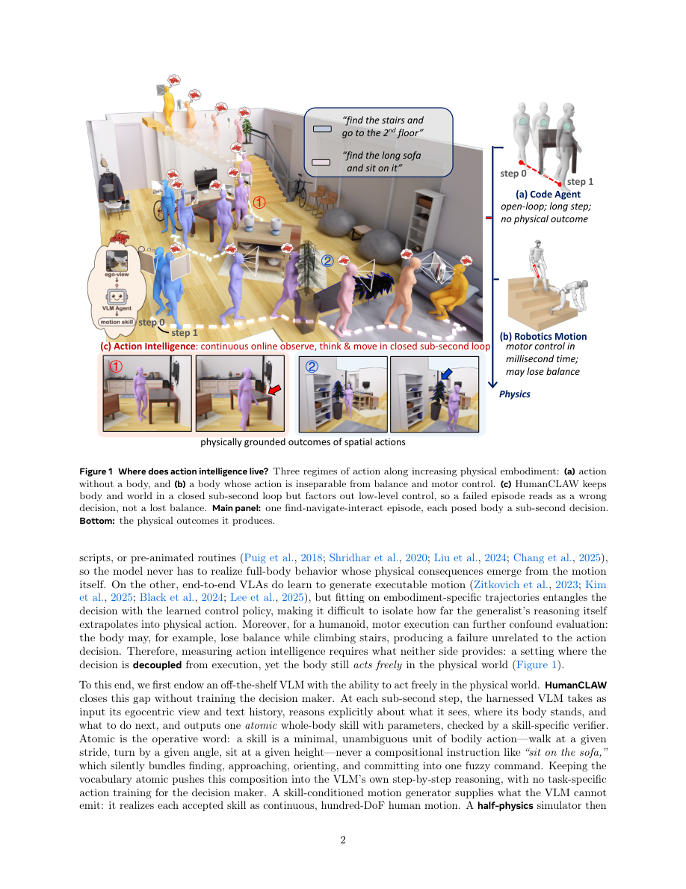

#1
★ 8/10
HumanCLAW: Can Vision-Language Models Act Through a Body?
HumanCLAW：视觉语言模型能通过身体来行动吗？

图 Figure · Page 2 of paper
🎯 首个将AI决策与身体执行解耦的具身智能评测框架
A new benchmark that fairly tests whether AI brains can control a physical body — separately from motor errors.
🗣️ 一句话比喻 · Plain-English Analogy就像你闭上眼睛、戴上耳机，只靠别人喊指令来穿越一个陌生房间——你可能知道桌子在哪儿，却不知道自己有没有撞到它、走过头没有。当前AI就是这样：看得见东西，却搞不清自己身在何处。Imagine playing a video game where you can perfectly read the map, but you have no idea where YOUR character is standing on it — so you keep walking past the goal or bumping into walls you thought you'd avoided. That's exactly what today's AI does when put in a body.
| 维度 | 中文 | English |
|---|---|---|
| ❓ 待解决 的问题 |
现有AI模型（比如GPT-4V这类"看图说话"的大模型）越来越厉害，但我们并不清楚它们是否真的能控制一个有实体的身体去完成任务。更麻烦的是，当机器人任务失败时，根本搞不清楚是AI"脑子"判断失误，还是机器人"腿脚"执行出了问题——就像考试不及格，分不清是题没读懂还是手抖写错了答案。 | Today's AI vision-language models (like GPT-4V) are great at describing pictures, but can they actually control a physical body to complete real tasks? The big challenge is: when a robot fails a task, we can't tell if the AI made a bad decision or if the robot's motors just fumbled — like not knowing if a student failed because they didn't understand the question or just had shaky handwriting. |
| 💡 解决 的亮点 |
• 创新解耦设计：把AI的"决策脑"和身体的"执行腿"分开测试，确保评分只反映AI的判断力，而不受物理执行误差的干扰。 • 大规模真实评测台：构建了包含1,218个长流程任务、41个室内场景的HumanCLAW-Bench，是迄今最全面的具身AI评测之一。 • 发现关键短板：研究发现当前VLM的瓶颈不是"认路"，而是缺乏"身体自我感知"——不知道自己身在何处、是否碰到了障碍物。 | • Smart decoupling: Separates the AI's decision-making from physical motor execution, so scores only reflect the AI's thinking quality. • Large-scale realistic benchmark: 1,218 long-horizon tasks across 41 indoor scenes — one of the most comprehensive embodied AI tests yet. • Key insight discovered: Current AI models aren't bad at recognizing objects — they fail because they lack "body awareness," not knowing where they are or if they've bumped into something. |
| 🧪 实验 内容 |
研究者构建了HumanCLAW-Bench，包含1,218个"寻找-导航-交互"任务片段，分布在41个不同室内场景中，全部采用第一人称视角。他们测试了9个当前最先进的视觉语言模型，包括GPT-4o、Gemini等主流模型，以任务完成成功率作为核心评测指标，并进一步拆解分析了"目标识别""导航规划""身体定位"等子能力的表现。 | The researchers built HumanCLAW-Bench with 1,218 "find-navigate-interact" task episodes across 41 indoor scenes, all from a first-person (egocentric) viewpoint. They tested nine state-of-the-art VLMs including top models like GPT-4o and Gemini, using task success rate as the main metric. They also broke down performance into sub-skills like target recognition, navigation planning, and body self-localization to pinpoint where models fail. |
| 📊 实验 结果 |
9个顶尖VLM模型无一能解决这个基准测试：表现最好的模型成功率仅为16.8%，其余模型表现更差。进一步分析显示，目标识别并不是瓶颈，模型主要败在"身体自我感知"上——不知道自己当前在哪、有没有到达目标位置、有没有撞到障碍物。 | Not a single one of the 9 tested state-of-the-art VLMs could solve the benchmark. The best model achieved only a 16.8% success rate. Analysis confirmed that object recognition is NOT the weak point — models fail specifically at body self-awareness: tracking their own position, knowing when they've reached a goal, and detecting collisions. |
| 🏁 结论 | 本文证明了当前最先进的视觉语言模型在具身智能上存在根本性缺陷——不是"看不懂"世界，而是"不知道自己身在其中"。HumanCLAW提供了一个公平、可量化的评测框架，为未来具身AI的发展指明了关键改进方向。 | This paper proves that today's best AI vision models fundamentally lack "embodied self-awareness" — they can see and recognize the world but can't track their own body within it. HumanCLAW provides a fair, rigorous benchmark that pinpoints exactly what needs to be fixed to build truly embodied AI. |
| 🔗 论文 链接 |
arXiv: 2607.27180v1 · 📥 PDF | |
⚙️ Method · 方法详解
HumanCLAW的思路就像给一个聪明的"大脑"配上一个专业的"驾驶员"：大脑（VLM）每一步只需下达一个简单指令，比如"向前走"或"拿起那个杯子"；专业驾驶员（运动控制模块）负责把这个指令精确变成全身连贯动作，同时保持平衡、处理碰撞。这样一来，测试结果只反映AI的"决策智慧"，而不会因为身体摔倒或运动抖动而被拉低分数。整个系统在物理仿真环境中运行，重力和碰撞都是真实存在的。
Think of it like a driving test where the examiner only grades your route decisions, not your steering smoothness. At every step, the AI (VLM) issues a simple atomic command like "walk forward" or "pick up the cup." A separate professional motor controller then executes that command physically, handling balance and collisions on its own. This way, test scores purely reflect the AI's decision-making intelligence. The whole thing runs in a physics simulator with real gravity and collisions.
🌟 Why It Matters · 为什么重要
随着人形机器人和智能家居助手走入现实，AI必须学会真正"住进"一个身体里。这项研究揭示了当前最强AI的核心短板，为下一代能做家务、照顾老人的机器人指明了技术攻关方向。
As humanoid robots and home assistants become reality, AI needs to truly inhabit a body, not just see through a camera. This research exposes a critical blind spot in today's most powerful AI, pointing engineers toward the exact fixes needed to build robots that can do your laundry or help elderly relatives.